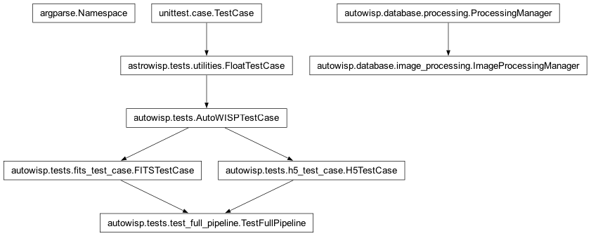
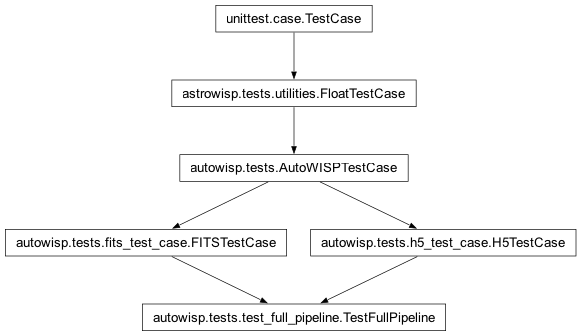

autowisp.tests.test_full_pipeline module
Class Inheritance Diagram

End-to-end pipeline test driven by autowisp.run_pipeline.
Mirrors what the BUI does when a user creates a new project: builds the
project’s SQLite database from test_data/test.cfg and
test_data/master_config.json via the same helpers the BUI uses
(parse_config_overwrites + master_config_json_to_settings +
apply_master_config + initialize_database), imports the survey
JSON, registers every raw image, runs the full pipeline (calibration
through TFA / detrending statistics), and compares the generated
artifacts to the expected outputs in test_data/.
- class autowisp.tests.test_full_pipeline.TestFullPipeline(methodName='runTest')[source]
Bases:
H5TestCase,FITSTestCase
Run the full pipeline end-to-end and check every output.
- _assert_detrending_stats_match(basename)[source]
Compare an
epd/tfastatistics file via pandas.Matches the comparison rule used by
autowisp.tests.test_detrending_stat.TestDetrendingStat.
- _assert_dir_fits_match(relative_dir)[source]
Assert every
*.fits*inrelative_dirmatches expected.
- _register_photref()[source]
Mimic the BUI’s
record_photref_selectionfor the test photref.Calls
compute_photref_candidates()to obtain the same per-condition batches the BUI would surface to the user, finds the batch containing the test’s chosen photref DR file (set insetUpfromtest.cfg), registers the file as asingle_photrefmaster, and binds every eligible image in the batch viabind_images_to_photref().
- setUp()[source]
Bring up a project the same way the BUI does on creation.
AutoWISPTestCase.setUpalready handles the processing-dir creation,test.cfgcopy,set_project_home, and survey import (against a minimal schema). On top of that we run a fullinitialize_database(drop_all_tables=True)– mirroring the BUI’s project-creation flow – and re-import the survey since that drops the provenance rows the base class just imported.
- test_full_pipeline()[source]
Run the full pipeline and compare every output to expected.
The pipeline runs in two passes. On the first pass it does as much as it can;
fit_magnitudesand the downstream lightcurve steps stay pending because nosingle_photrefmaster has been registered yet. Between the passes the test registers the single photometric reference DR file via the same helpers the BUI uses, after which the second pass picks upfit_magnitudesand everything beyond.